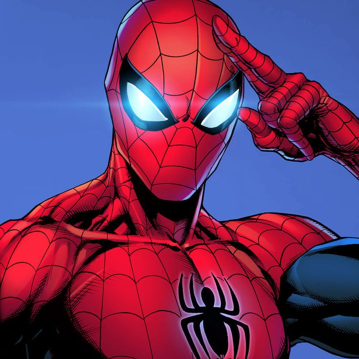

Цікаві факти про Спайдермена
- Це перший персонаж супергерой-підліток, який діє самостійно. За час існування історій він встиг закінчити школу, коледж та навіть побути вчителем.
- Marvel Comics випустила безліч серій, найвідоміша з яких — «The Amazing Spider-Man».
- Пітер Паркер був членом таких команд, як Месники та Фантастична четвірка, а у звичайному житті працював незалежним фотографом.
